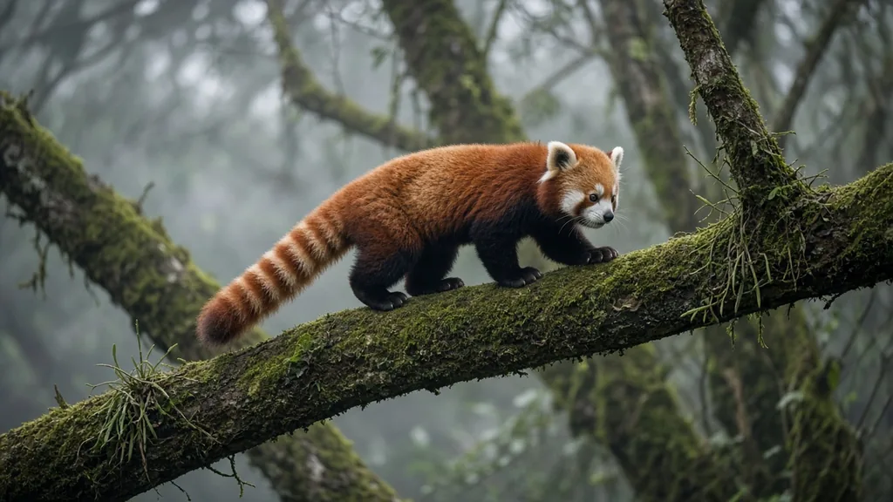
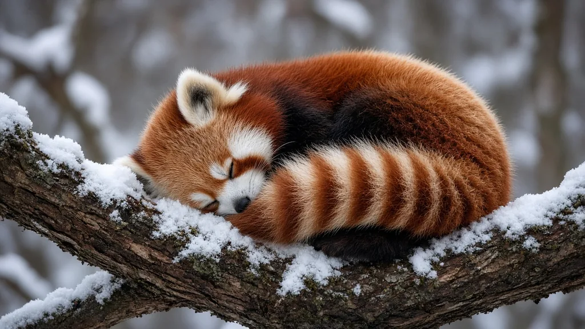

Why do red pandas have such bushy tails?

Red pandas have long, bushy tails to help them balance on tree branches and stay warm in cold forests. They can extend the tail while climbing and wrap it around themselves while resting.
More than a striking pattern
A red panda's ringed tail is one of its most recognizable features, but it does practical work. Smithsonian's National Zoo explains that the tail helps the animal balance in trees and protects it from cold and wind. WWF likewise describes red pandas using their tails while crossing branches and wrapping them around themselves during winter.
The tail is useful because red pandas spend much of their lives above the ground in temperate mountain forests. Their climbing ability depends on more than one adaptation, including claws, flexible movement, and furry feet. The tail adds to that toolkit while also serving as a portable covering when the animal rests.
How a tail helps in the canopy
Tree branches are narrow, irregular, and sometimes slippery. A red panda crossing them must continually adjust its body position. Its long tail can assist balance as it moves along a branch or negotiates a change in direction. The animal still needs good footing; the tail cannot rescue it from every slip.
Watch the difference between a red panda standing on a broad platform and one crossing a slender branch. The tail may be extended behind the body during movement, while the feet and torso make the fine adjustments needed to stay secure. The Smithsonian describes this as a balancing function, not a claim that the tail alone controls climbing.

Why the fur is so dense
The red panda's native forests can be cold, and its fur provides insulation. Smithsonian describes a woolly undercoat beneath longer guard hairs, as well as dense fur on the feet. The tail is another insulated surface that can be wrapped around the body. In a curled resting posture, it can cover vulnerable exposed areas, including the face.
The tail is not an independent heating system. It helps conserve warmth by reducing exposure, alongside the animal's coat and choice of sheltered resting place. Red pandas may be active in cold conditions rather than avoiding winter entirely. A thick tail is therefore useful both when moving and when resting.
Do the rings have a special purpose?
The alternating bands are visually distinctive, but it is important to separate what is known from what is merely plausible. The reliable sources consulted here clearly support balance and warmth as tail functions. They do not establish that a particular ring count signals age, that the rings identify family members, or that they are used as a precise code between animals.
A red panda's reddish coat can blend with the mosses and lichens of its forest habitat, according to Smithsonian. That general camouflage context does not prove a separate evolutionary explanation for every tail stripe. Animal patterns often invite neat stories, but a good answer should distinguish documented functions from attractive speculation.
What the tail tells us about red panda habitat
A tail adapted for branch travel and cold-weather rest makes sense in a forest-dwelling animal. WWF identifies habitat loss as a major conservation concern for red pandas. Trees provide routes, resting sites, and shelter, while bamboo and other forest resources support daily life.
Preserving habitat matters more than admiring an isolated feature. A bushy tail is valuable because it works in the setting where the animal evolved. A red panda cannot replace a connected forest simply by being an excellent climber. Its distinctive tail is a small window into the larger relationship between body shape, behavior, and habitat.
Looking closely without inventing explanations
A red panda's tail can appear almost as large as the rest of its body when the fur is fluffed out. That visual effect makes it tempting to assign a purpose to every stripe and every movement. Reliable zoological accounts are more restrained: they emphasize balance and warmth. Those are already impressive functions, and there is no need to invent extra ones.
The next time you see a photograph of a red panda curled into a ball, notice how the tail changes from an extended balancing aid into a soft cover. If the same animal later climbs a branch, its tail may extend behind it. These are different uses of the same anatomy, not separate organs or mysterious behaviors.
Frequently asked questions
Is a bushy tail normal for red pandas?
Yes. A long, bushy, ringed tail is a characteristic part of red panda biology, although unusual changes or signs of injury deserve separate attention.
Does every red panda use its tail exactly the same way?
No. Individuals differ, and their behavior changes with the environment, activity, and circumstances. Avoid judging an animal from a single photograph or brief encounter.
Can the red panda's tail be understood without its habitat?
Not completely. Body structures and behaviors make more sense when considered alongside the places animals live and the challenges they face.
What is the most important thing to remember?
Focus on the well-supported explanation rather than a dramatic myth: the tail helps with balance in the trees and with warmth when resting.
Sources
Cite this page
APA
PandasWise. (2026, November 9). Why do red pandas have such bushy tails? https://pandaswise.com/blog/why-do-red-pandas-have-bushy-tails.html
MLA
"Why do red pandas have such bushy tails?" PandasWise, 9 Nov. 2026, https://pandaswise.com/blog/why-do-red-pandas-have-bushy-tails.html.
Chicago
PandasWise. "Why do red pandas have such bushy tails?" PandasWise. November 9, 2026. https://pandaswise.com/blog/why-do-red-pandas-have-bushy-tails.html.